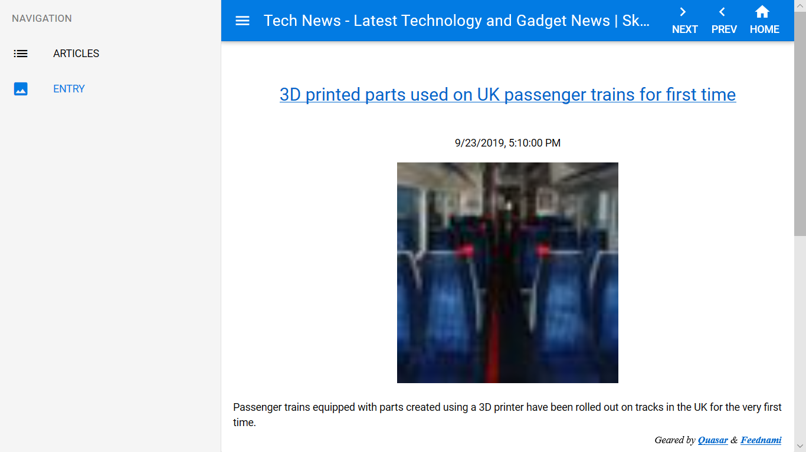

JUL News Reader - Quasar
For a live demo, click HERE
Each project/module of this app builds the template for a VueJS SFC in a Node ES6 project. The Node project is located in Designer's
'assets/examples/nesreader.quasar/'
working folder.
The
module -> file
mapping is as follows:
-
Articles -> src/pages/index.vue -
Entry -> src/pages/entry.vue -
Layout -> src/layouts/MyLayout.vue
quasar dev
), each save of a project in Designer will update the Node application. You may inspect the
.vue
files to see how the Designer generated template is imported in the SFC component.
Note that the Vue runtime template compiler and all Quasar components are enabling in
quasar.conf.js
fine.
For the actual development, you need to have
Node.js installed, open a console window in the Node project folder, and type the following shell commands:
npm install -g @quasar/cli npm install quasar devThe development app will start at
http://localhost:8080/
. Use an up-to-date browser to run the development app or the live demo.
To build a production app, use the command:
quasar build -m <target>as specified in the Quasar Docs. Good luck and have a nice development :-)
Regards,